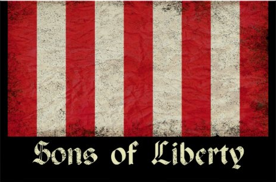

The Land of the Free, Because of the Brave
A Nation Founded Upon Gods Providence

There is no record of history as bloody and battered as that of the power to rule. Countless millions have been marched to their graves during wars fought over the whims of and the interests of lone individuals. Countless millions more have suffered lives of wretched, inescapable slavery simply because they were born to the wrong classes. Entire empires, built by the brilliance and diligence of generations, have crumbled in the hands of despotic kings with no more competence or intelligence than the lowliest beggar. -- For many centuries, man has blocked in a social mechanism whereby an elite few arbitrarily wielded power, swinging the massses to and fro with little or no recognition or respect for the divine inspiration alight in us all. During man's trudge through the dystopian Dark Ages, however, a radical idea emerged and, like a tale of Atlantis, fired imaginations to dream of a world never before known. -- This simple concept was the first breath of what would become the greatest ideological transformation in history: all human beings, regardless of gender, status, wealth, and religion, are born equally free and with the right to the enjoyment of life, liberty, and property and the right to pursue happiness. These natural God given rights are born with us, exist within us, and cannot be taken from us by any human power without taking our lives. Moreover, these rights formed fundamental law to which all man-made systems of domination or governance were absolutely subordinate. -- This philosophy was a golden ray of light that punctured the gloom of past tyrannies, and it was the substance of groundbreaking recognitions of personal liberties such as the Magna Carta, the writ of habeas corpus, the Petition of Right, the Northwest Ordinance and others. -- As history would have it, the American colonists would be the people to carry this ideology to its full fruition. "America has opened," Emerson wrote, "after the feudal mischief was spent, and so the people made a good start. We began well. No inquisitions here, no kings, no nobles, no dominant church. Here heresy has lost its terrors."